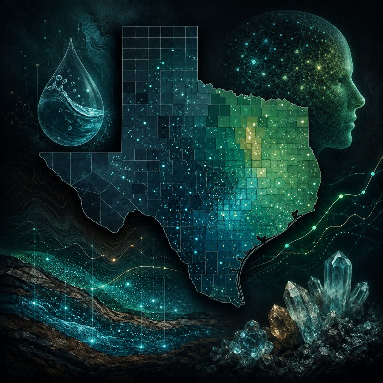
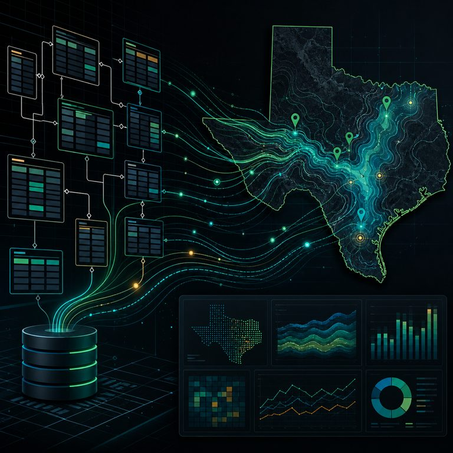

Chloe Barker
Data Scientist · Machine Learning · Analytics
M.S. Data Science graduate from SMU focused on applied machine learning, data analytics, decision support, and data engineering. I build projects that move past notebook metrics into stakeholder decisions: who to prioritize, which model to trust, what trade-off matters, and how to explain the result clearly. Recently completed a Data Science internship at Goosehead Insurance, working with Python, SQL, PySpark, Snowflake, and Databricks on lead prioritization and marketing analytics.
Education

Experience

- Developed and evaluated machine-learning models using large-scale insurance data in Snowflake and Databricks to support lead prioritization, customer segmentation, and marketing decision-making
- Built data preparation and modeling workflows using SQL, Python, and PySpark; compared classification approaches and translated analytical findings into recommendations for business stakeholders
Skills
 Python
Python R
R pandas
pandas NumPy
NumPy scikit-learn
scikit-learn Databricks
Databricks
 Snowflake
Snowflake
 GitHub
GitHub Jupyter
JupyterProject Playlists
Curated collections of applied analytics, modeling, engineering, and storytelling work.

Studied county-level lithium–dementia associations in Texas and tested sensitivity to exposure heterogeneity, covariate adjustment, and influential observations.
 Code
CodeDeployed prototype that ranks diabetes encounters by predicted readmission risk and retrieves CMS/AHRQ guidance for scenario planning.
Seven end-to-end models across healthcare, HR, real estate, and finance, from feature engineering to validation and business recommendations.
Compared 6 clustering methods on 100K synthetic health records and mined 541K retail transactions for product association rules.

Built a 64-table MySQL database for 20+ years of Texas groundwater data, paired with SQL aggregation and interactive geospatial maps.
No matching projects yet.